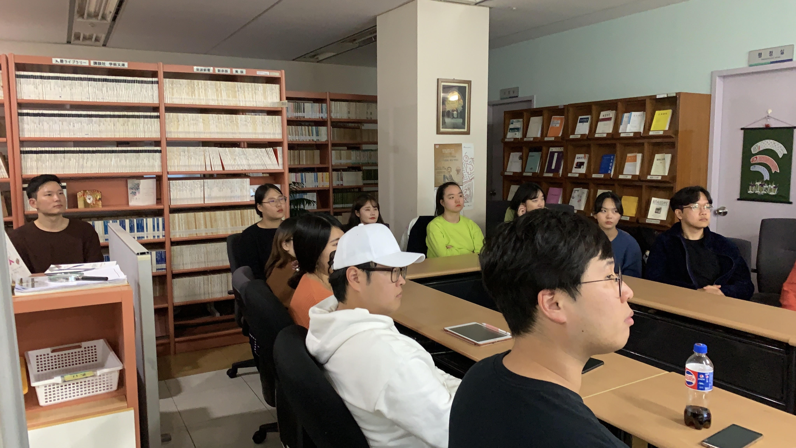

日本学科
저의 본전공은 '일본학'입니다.
제가 전공을 소개하면 많은사람들이 처음에는 '일본어학과?','일본어를 배우는거지?'라고 반문해옵니다.

교육과정에는 일본어를 배우는 수업이 있습니다. 1학년 때는 기본적으로 일본어 수업을 받도록 되어있습니다. 하지만 그것은 일본에 대한 전반적인 지식을 얻기위한 기본적인 지식으로써 배우는 것이고, 2학년 부터는 선택적으로 문화, 역사 등의 수업을 들을 수 있습니다. 언어에 대해 더 배우고싶다면 통/번역 수업을 수강 할 수도 있습니다.
일본학과에서 주최/ 지원하는 교환학생,어학연수 프로그램 많이 있습니다. 저는 2018년 2학년 2학기에 사이타마현의 릿쇼대학 이라는 곳에서 jlpt프로그램을 통해서 어학연수를 다녀왔는데, 바로 옆의 이웃나라였지만 짧은기간동안 일본이라는 나라를 체험 할 수 있어 좋은 경험을 했다고 생각합니다.

현재는 교내 도서관1층에 위치한 일본학연구소에서 연구보조원으로 근무하고 있습니다.
노래 가사가 간단해서 일본어를 처음 공부하는 사람들이 듣기 좋은 수준의 노래입니다. 듣기연습에 좋은 같아요!